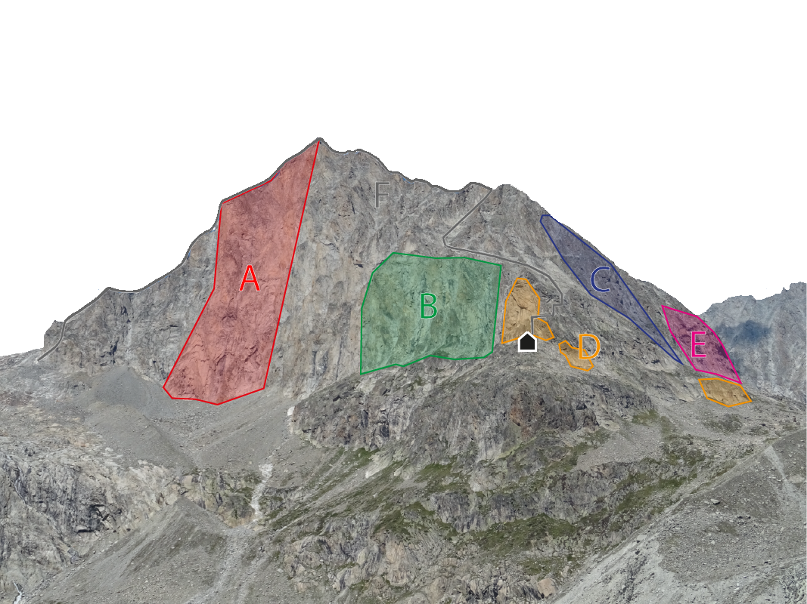

Willkommen
Willkommen auf dem digitalen Kletterführer des Jägihorns. Hier findest du Informationen zu den Kletterrouten, Zustiegen, Abstiegen, Topos und Sektoren.
Sektoren entdecken ↓Sektoren
Wähle einen Sektor aus, um alle Kletterrouten anzuzeigen.
